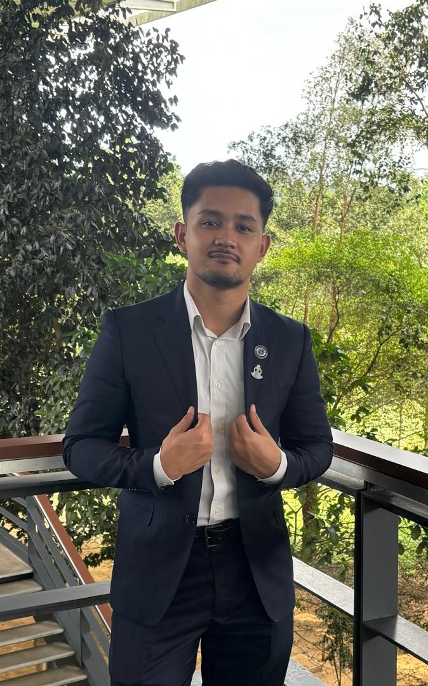

HELLO, I’M NIK ADAM.
Technology graduate
who builds.
First Class Honours Information Technology graduate from Universiti Teknologi PETRONAS, specialising in Big Data Analytics. I build practical solutions across data, software, automation, AI, IoT and digital transformation.
About me
About me

I am an Information Technology graduate from Universiti Teknologi PETRONAS who enjoys working at the intersection of technology, data and real-world problems.
My experience spans AI-powered enterprise solutions, data analytics, IoT systems, software development and digital transformation.
I am particularly interested in becoming a well-rounded technology professional who can understand both the technical and business sides of a problem.
- Honours
- First Class Honours
- Degree
- Information Technology
- Specialisation
- Big Data Analytics
- Minor
- Accounting & Finance
- CGPA
- 3.69
- Award
- President Award, IT Programme
Key projects
Key projects
Experience
Experience
Technical skills
Resume
The full record of education, projects and experience, as a PDF.
Let’s build
something.
Open to opportunities in technology, data, digital transformation and software.
- Mobile
- +60 11-5874 6014
- Location
- Kuala Lumpur, Malaysia